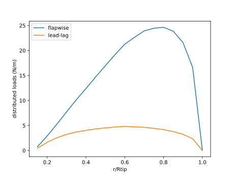
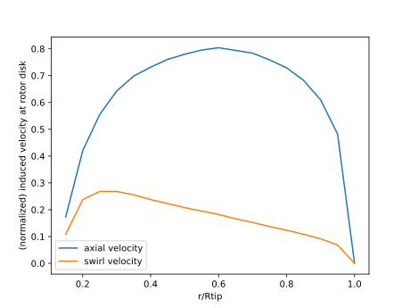
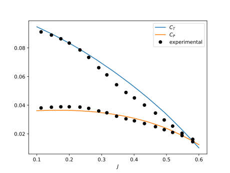

Quick Start
This starter tutorial walks through the mechanics of running a analysis. This is designing as a starting point and does not explain every option or consideration. More specific and advanced usage are described in the how to guide.
We will simulate the APC thin electric 10 x 5 propeller. The geometry, and wind tunnel data for this propeller is available from UIUC. Let's load CCBlade and a plotting package (I use PyPlot in these examples).
using CCBlade
using PyPlotThere are two parts of the geometry we need to define: the first are quantities for the whole rotor, and the second part defines properties that vary along the blade radius. For the rotor, we only need to define the hub radius, tip radius, and the number of blades.
This is a two-bladed propeller, and the 10 in the name (10 x 5) means it has a diameter of 10 inches (and so the tip radius is half of that). I prefer to do all calculations in metric units so I'll convert it. From the geometry table for this propeller we see that the hub radius is less than $0.15 R_{tip}$. It isn't defined exactly, and is less critical, we'll assume $0.10 R_{tip}$ for this example.
Rtip = 10/2.0 * 0.0254 # inches to meters
Rhub = 0.10*Rtip
B = 2 # number of blades
rotor = Rotor(Rhub, Rtip, B)Next, we define the geometry along the different radial stations. The more radial stations we add, the more points we will compute loads at. There is a tradeoff here in computational time and accuracy in representing (and integrating) loads. The geometry table defines the normalized radial stations, normalized chord, and the twist angle in degrees. CCBlade assumes all angles are given in radians so we will need to convert that, we will also unnormalize the radius and chord (alternatively we could do everything in consistent nondimensional units).
propgeom = [
0.15 0.130 32.76
0.20 0.149 37.19
0.25 0.173 33.54
0.30 0.189 29.25
0.35 0.197 25.64
0.40 0.201 22.54
0.45 0.200 20.27
0.50 0.194 18.46
0.55 0.186 17.05
0.60 0.174 15.97
0.65 0.160 14.87
0.70 0.145 14.09
0.75 0.128 13.39
0.80 0.112 12.84
0.85 0.096 12.25
0.90 0.081 11.37
0.95 0.061 10.19
1.00 0.041 8.99
]
r = propgeom[:, 1] * Rtip
chord = propgeom[:, 2] * Rtip
theta = propgeom[:, 3] * pi/180The remaining piece in defining the geometry is the airfoils. We don't actually define the airfoil geometry, but rather the aerodynamic performance data of the airfoils at each station (lift and drag coefficients). This propeller uses the NACA 4412 airfoil, for which experimental data is readily available, or for which computational data can be easily provided. The data for this airfoil is contained in a file "naca4412.dat" (in the data directory of the repository). The file format is discussed in Airfoil Files. There are some important details to be aware of when providing airfoil data–-the way this file was constructed is covered in Airfoil Data. For now, we just assume provided airfoil data. The file extension is not important, all that matters is that the format has columns of data for: angle of attack | lift coefficient | drag coefficient (after an informational header row, a row for Reynolds number, and a row for Mach number). We can either put in the full or relative path to the file, for example if you were in the home directory of this repository:
af = AlphaAF("data/naca4412.dat")or we can change directory (note the semicolon to enter shell mode from the REPL):
; cd data
af = AlphaAF("naca4412.dat")We can now define the sections using this airfoil data. Since Section is defined for one section, and we'd like to define them all simultaneously, we use broadcasting (see the dot after Section). The airfoil is the same for all stations along the rotor so we wrap it in a Ref() call so that it can be broadcast across.
sections = Section.(r, chord, theta, Ref(af))Next, we define the operating point(s). You can define your own arbitrary inflow struct, but for this example we will assume constant inflow across the rotor. We again use broadcasting because the velocities will vary at each radial station r. For this simple method we just need to know the freestream speed, rotation speed, and the air density.
Vinf = 5.0
Omega = 5400*pi/30 # convert to rad/s
rho = 1.225
op = simple_op.(Vinf, Omega, r, rho)We have now defined the requisite inputs and can start using the BEM methodology. The solve function is the core of the BEM. Note that we use broadcasting to solve all sections in one call. However, since rotor is not an Array, and is the same for all sections, we wrap it in Ref so that it can broadcast as a "scalar".
out = solve.(Ref(rotor), sections, op)There are many outputs, and although the return variable is actually an array of structs, convenience methods are provided to access the fields as if it was a struct of arrays. For example, we can access the angles of attack at each radial station as:
out.alpha*180/pi # angle of attack in degrees18-element Vector{Float64}:
2.0022243728484095
8.829422477953987
8.870590912749018
7.52560914549595
6.426689255291592
5.428909664912407
4.831836218455918
4.416757366128305
4.18459393032332
4.10240858383191
3.948108963919129
3.9579344372819785
3.994888320432903
4.067782228382873
4.045789972893049
3.6912584138275917
3.0401847819021457
0.0The full list of outputs and their positive directions are shown in Output Struct.
Let's now plot the distributed loads.
figure()
plot(r/Rtip, out.Np)
plot(r/Rtip, out.Tp)
xlabel("r/Rtip")
ylabel("distributed loads (N/m)")
legend(["flapwise", "lead-lag"])<!– # savefig("loads-prop.svg") –>

We will also look at the induced velocities. For propellers these velocities are useful to assess, for example, prop-on-wing interactions.
figure()
plot(r/Rtip, out.u/Vinf)
plot(r/Rtip, out.v/Vinf)
xlabel("r/Rtip")
ylabel("(normalized) induced velocity at rotor disk")
legend(["axial velocity", "swirl velocity"])
As before, we'd like to evaluate integrated quantities at multiple conditions in a for loop (advance ratios as is convention for propellers). The normalization conventions for a propeller are:
\[\begin{aligned} C_T &= \frac{T}{\rho n^2 D^4}\\ C_Q &= \frac{Q}{\rho n^2 D^5}\\ C_P &= \frac{P}{\rho n^3 D^5} = \frac{C_Q}{2 \pi}\\ \eta &= \frac{C_T J}{C_P} \end{aligned}\]
where
\[\begin{aligned} n &= \frac{\Omega}{2\pi} \text{ rev per sec}\\ D &= 2 R_{tip} \cos(\text{precone})\\ J &= \frac{V}{n D} \end{aligned}\]
The code below performs this analysis then plots thrust coefficient, power coefficient, and efficiency as a function of advance ratio as compared to the experimental data.
nJ = 20 # number of advance ratios
J = range(0.1, 0.6, length=nJ) # advance ratio
Omega = 5400.0*pi/30
n = Omega/(2*pi)
D = 2*Rtip
eff = zeros(nJ)
CT = zeros(nJ)
CQ = zeros(nJ)
for i = 1:nJ
local Vinf = J[i] * D * n
local op = simple_op.(Vinf, Omega, r, rho)
outputs = solve.(Ref(rotor), sections, op)
T, Q = thrusttorque(rotor, sections, outputs)
eff[i], CT[i], CQ[i] = nondim(T, Q, Vinf, Omega, rho, rotor, "propeller")
end
exp = [
0.113 0.0912 0.0381 0.271
0.145 0.0890 0.0386 0.335
0.174 0.0864 0.0389 0.387
0.200 0.0834 0.0389 0.429
0.233 0.0786 0.0387 0.474
0.260 0.0734 0.0378 0.505
0.291 0.0662 0.0360 0.536
0.316 0.0612 0.0347 0.557
0.346 0.0543 0.0323 0.580
0.375 0.0489 0.0305 0.603
0.401 0.0451 0.0291 0.620
0.432 0.0401 0.0272 0.635
0.466 0.0345 0.0250 0.644
0.493 0.0297 0.0229 0.640
0.519 0.0254 0.0210 0.630
0.548 0.0204 0.0188 0.595
0.581 0.0145 0.0162 0.520
]
Jexp = exp[:, 1]
CTexp = exp[:, 2]
CPexp = exp[:, 3]
etaexp = exp[:, 4]17-element Vector{Float64}:
0.271
0.335
0.387
0.429
0.474
0.505
0.536
0.557
0.58
0.603
0.62
0.635
0.644
0.64
0.63
0.595
0.52figure()
plot(J, CT)
plot(J, CQ*2*pi)
plot(Jexp, CTexp, "ko")
plot(Jexp, CPexp, "ko")
xlabel(L"J")
legend([L"C_T", L"C_P", "experimental"])
figure()
plot(J, eff)
plot(Jexp, etaexp, "ko")
xlabel(L"J")
ylabel(L"\eta")
legend(["CCBlade", "experimental"]) 
There is reasonable agreement, certainly within experimental/computational error. Accurate airfoil data is always the most crucial input for these methods. Working with various corrections and setup of the airfoil data is discussed more in Airfoil Data.